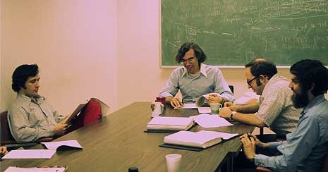
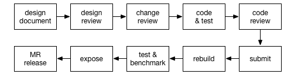

Loading
We used to speak of building things "the Multics way." To me this meant trying to solve the general problem as well as the immediate one; open discussion of every technical point; continuous evolution of our product and our process; and attention to consistency, efficiency, elegance, and evolution. Doing it right rather than doing just enough. When the Multics hardware is obsolete and the code lost, I'll still prefer to develop software the Multics way.
The Multics software development process evolved during the 20 or so years of Multics development from the mid 1960s to the mid 1980s. A comparatively small number of people, less than 100 at any time, built Multics. Former team members look back on the process we used as outstanding.
The Multics process was designed by the system developers themselves. We often chose practicality rather than rigor and formality; nevertheless, the Multics process had features and safeguards that other organizations omitted.
[Jerry Saltzer (JHS) wrote:] Most of the process ideas were developed by multiple contributors. I don't remember any process mechanisms that were primarily from one or two people. Put another way, the process of developing the process was recursively an example of the process.
Our process was described in the COMPCON 78 invited paper "The Multics System Programming Process" by Clingen and Van Vleck.
This article describes the software development process we followed at
- MIT Project MAC and LCS, 1965-1978
- GE/Honeywell Cambridge Information Systems Laboratory (CISL), 1965-1986
- Bell Labs Multics group, 1965-1969
- MIT Information Processing Center, 1968-1986
- Honeywell Phoenix Multics Development Center (PMDC), 1970-1988
Other groups contributed to Multics, using different processes; this article is about the process used for system software development.
Our process worked for us because we shared a vision of what we were doing, and a culture that encouraged cooperation to achieve the vision.
1. The Multics Vision
We were fortunate to start with a high level vision of what Multics should be. The six papers about Multics presented at the 1965 Fall Joint Computer Conference (FJCC) laid out nine major goals for Multics, and a high-level technical vision of the means chosen to accomplish these goals. Details in the FJCC papers required adjustment and elaboration, over the 20 years of system evolution, and additional needs and applications for Multics systems were found, but the central ideas remained constant.
General Electric marketing secured the rights to reprint the six Multics FJCC papers, and handed them out to potential Multics customers. Every member of the software development team had his or her own copy of the papers and used their contents to guide design choices.
[John Gintell (JWG) wrote:] Leadership and goals make things happen - and when consistent with vision and culture the things that happen are "good".
[JWG] For systems, a sound architecture provides a framework in which designs are good. Architecture and architectural goals were part of the early vision.
2. Software Development Group Culture
We were also fortunate to have a development group culture that enabled us to build Multics. John Gintell says that the culture was a direct reflection of our strong vision.
Our group culture was formed by shared commitment to the Multics vision, and a basic desire to "do it right." It was manifested in common attitudes, knowledge, practices, artifacts and behaviors.
[JWG] "The culture was so strong that it could survive good/bad people, staff turnover, and good/bad organizational approaches."
[Steve Webber (SHW) wrote:]
I think the real key was "The Multics Way" as personified by Noel. We were all proud of what we did and would be extremely embarrassed if Noel said to one of us, "That is not the Multics way." Doing work that you can be proud of is really a luxury that we all benefitted from.
Inspiration
The time-sharing, remote-access orientation of Multics was different from that of traditional batch processing systems. Software Development team members felt strongly that we were working on an operating system unlike any other. We took pride in leading the computer field and doing things no other system had done.
Often, we felt that we were fighting for acceptance; there were those in the computer field who disagreed with our goals and our approach. This led to some simplified "us and them" thinking, which enhanced morale, perhaps at the expense of strict truth. In competitive situations, we strove to win functional and performance benchmarks against other systems that used less complex technology. The development team did not feel supported by our institutions: in many cases they were regarded as another enemy. Our constant fear that Multics would be canceled before its benefits could be shown gave us a different sense of urgency from the kind of pressure that comes from arbitrary management-set deadlines.
We weren't motivated by money or the chance of getting rich. There were no startup stock options, and salaries for programmers were not particularly high in the 1960s and 1970s.
People
The Multics team was made up of smart and committed people. Team members, known as Multicians, identified strongly with Multics and the Multics team, and had little loyalty to the higher organization, whether MIT or Honeywell. People working on Multics were paid to do so, and had managers who directed their efforts. Multics developers had responsibility for defining a problem, proposing its solution, choosing a design, and implementing, packaging, and testing the design, all done in collaboration with the rest of the team. Based on the Multics project origins as an MIT research project, we took an experimental and skeptical approach to solving problems. Our ideal was open discussion of all documents and code with mutual respect, criticizing ideas but not personalities.
Hiring
We were lucky to have a very effective  hiring process
that found people who were not only capable developers, but also worked well together, and believed passionately in Multics.
Because of our origin at MIT, Project MAC hired a lot of MIT graduates, and CISL and MIT IPC continued this practice.
Many of these hires were well trained, used to pressure and long hours, and technically confident.
hiring process
that found people who were not only capable developers, but also worked well together, and believed passionately in Multics.
Because of our origin at MIT, Project MAC hired a lot of MIT graduates, and CISL and MIT IPC continued this practice.
Many of these hires were well trained, used to pressure and long hours, and technically confident.
Work Hours
Many programmers chose to work non-standard hours in order to get better computer access. A few people started work early; others arrived at the office late and then worked into the night. Performing a development run might require working all night through the midnight to 8AM shift. As time-sharing terminals became less expensive and more available, some programmers were supplied with a home terminal and did substantial work from home. The result of these practices, and our eagerness to make progress, led many team members to work long hours. Working on Multics was exciting: people stayed late to be there when a milestone was passed. The Phoenicians worked long and hard too, especially on Multics benchmarks.
(When I moved on to the Silicon Valley startup culture, I met many people who boasted of their 80 hour weeks. I was not impressed.)
At Project MAC, programmers didn't fill out time cards. At Honeywell, we had to do weekly cards that allocated our time between projects: they told me to write down numbers that totalled 40, no matter how many I worked. (Years later I worked at a defense contractor: I was really upset when I was told I was forbidden by law to work more than 40 hours a week.)
Schedule Pressure
[Mike Grady (MJG) wrote:] My own experience has been that in more "commercially-driven" environments, there is never enough time to do it right, but time is always found to do it over again (and again). I never had the sense that while working on the Multics project that we had a "schedule" or dates that had to be met. We were encouraged to work on things that would make a difference and improve the computing environment. We often took detours and experimented with things (some of which didn't work out), but many of which made a big contribution and also took longer to implement than anyone expected.
[MJG] There were "exciting times" (like the USGS Benchmark effort), but much of that was self-imposed desire to come out on top. I have often told people that it was the ideal work environment -- a great team of people, exciting things to get involved in (take your pick...) and as much time as you needed to make it the best possible solution.
Style
Most programmers were young, and individual styles and expression were accepted. The team tended toward informal democracy and consensus decision making in many areas. Decisions were left to self management whenever that would work. We liked and supported each other; we had lunch together; we had picnics.

In the mid 1960s at Project MAC, male programmers often wore jackets and ties, but as the 1960s and 1970s progressed, Multics programmers at MIT, CISL, and Phoenix often dressed more casually. Jeans, t-shirts, and bare feet were fine. In the 1960s and 1970s, offices in MIT building 39 for MIT IPC, and in Technology Square for Project MAC and CISL, had hard walls and doors that closed. (in the 1970s and 1980s, PMDC programmers worked in cubicles at CRF.) Initially, time-sharing home terminals were not provided for every programmer or placed in offices; instead, we used shared pool terminals in terminal rooms, and this encouraged group cohesion.
Leadership

Clingen
Gintell

Vyssotsky

Glaser
We had intelligent, sensible, technically savvy, and compassionate management. Their leadership is what made the process work: they emphasized and interpreted the goals of the system, made tradeoff decisions when necessary, and obtained resources for the team. In organizational terms, the "power distance" of our team was low; there were few layers within the team hierarchy and every member felt free to have and express opinions. The Multics team had its own management style, with little prescription, training, or support from corporate. Partly this was an effect of physical and aspirational distance: we were out of sight of the upper echelons and had different goals. Because the initial project structure had people from three different organizations working together, the influence of the distant upper management was less immediate than local concerns.
Corbató and Clingen's 1979 paper, "A Managerial View of the Multics System Development", is a lucid and thoughtful look at the obstacles to building Multics and how the management team overcame them. One of our great unstated strengths was that our managers knew how to program.
[JHS] The process was in some sense self-consistent. Having leadership with technical savvy and few layers meant that it was possible to devolve design down to small teams of smart people, yet through design reviews maintain technical control to quickly spot and divert designs that were getting too baroque. A few designs that did get overly elaborate were gracefully diverted by labeling them the "advanced interactive version" and quietly letting them be forgotten while launching an effort at an "initial version".
Management insulated the software development team from most of the "corporate" rules, regulations, budget and finance process, and the like, except when there were "fire drills" when upper management would try to kill Multics and we would fight them off. This happened at Project MAC in 1968, when ARPA mandated a review of Multics, and multiple times at Honeywell: one such attempt led to the Palyn Report. These events reinforced the team's loyalty to Multics and to each other, rather than our corporate masters.
3. Process Principles
Challenges and Tactics
Multics software development faced multiple challenges that had to be overcome by our process.
- Magnitude of our objectives: We had ambitious goals, guided by the high-level system architecture.
- Technical pioneering: Multics committed to advanced strategies when they were still unusual.
- Lack of applicable models: We knew of no software development process that applied to a unique effort like ours.
- Size of the system: Multics was large for its day. Industry observers predicted that it was too big to build.
- Size of team: Our team was relatively small: dozens of programmers rather than hundreds.
- Geographically distributed team: We had contributors in Cambridge, New Jersey, and Phoenix.
- Staff Turnover: Having a small team meant that each member had a larger share of the group's expertise.
- Tools: Multics could not have been built with traditional data processing tools and constrained resources.
In order to deal with these challenges, the Multics process evolved several tactics.
-
Evolutionary approach:
Our experience creating CTSS showed that important subsystems would be redesigned repeatedly.
Building and using our system enabled us to discover requirements and tradeoffs whose implications were not foreseen when we began.
The emphasis on evolution, in turn, led us to additional tactics:
- Hardware and software were co-designed: Important features of the Multics architecture were supported by custom hardware and software designed to use it efficiently and securely.
- High-level language: Providing an execution environment with full PL/I support, dynamic linking, and I/O stream switching made it easy to write and debug programs quickly, and to compose programs into subsystems.
- Tool support: We used time-sharing computer access and tools we built ourselves to build Multics.
- Using our own product: We used the system we were building, and changes we made to it were installed and exposed to us rapidly.
- Process evolution: We changed our process as the system and the demands on it changed.
- Document driven: We produced many short memos and other documents, reviewed them within the team, and archived them.
- Open to all developers: Information was open to all team members, and all were welcome to comment on any subject.
- Review: We reviewed design documents and audited source code among ourselves as a natural part of the process.
- Responsibility and Initiative: Our culture encouraged us to make Multics the best system possible.
Design Review
Design Documents
In the mid 1960s, the MIT/GE/BTL software development team wrote 3000 pages of the Multics System Programmer's Manual (MSPM). MSPM sections described Multics designs and implementation without discussing alternatives; we were encouraged to choose and explain the best design and to present its implementation in a top-down manner. Longer white papers that did not fit into the MSPM were published as "repository documents." All of these documents were distributed to the whole team for comment before final publication.
The MSPM and repositories were superseded in the late 1960s, as Multics became operational, by a series of internal discussion and design memos called Multics Checkout Bulletins (MCBs), and these were also distributed to all team members for review. Over a thousand were written. MCBs were replaced by Multics Techical Bulletins (MTBs) in 1973 when we agreed that the "checkout" phase of Multics had ended: over 700 were written.
(One thing to notice about the MSPM is that the author names listed for each section can include the people who did the design and programming, and also additional people who wrote the document. There were times when progress in writing up new system features fell behind the pace of development, and additional staff members were enlisted to bring the documentation up to date.)
Review
In his  Computer History Museum Interview with Steve Webber, Corby said,
Computer History Museum Interview with Steve Webber, Corby said,
First of all, we had this notion that if you couldn't say what you planned, you couldn't [do it.] In the early days of programming, people just sat down with a blank piece of paper and started coding. They wouldn't show it to anybody else until they were finished and so forth. We had a different view of it. We had more of an engineering approach where you had to say what you planned to do [and] you had to run it through some sort of design review. Then the novel part for us was [that] we also said that you had to build it yourself. In other words, in order to get the right to build something, you had to be able to say what it was going to be.
Major design documents were often formally presented at a group meeting. If discussion was needed, a review meeting open to all would be held in a conference room, and issues raised would be documented in another memo, either an MCB/MTB, or an Multics Task Report (MTR). If major changes were made to the design as a result of review, another MCB/MTB would be written, circulated, and reviewed.
Another reason for document-centered work was that our system development team was geographically distributed. Project MAC was in Cambridge, Massachusetts; Bell Labs had Multics developers in three sites in New Jersey; and GE had Multics developers in Cambridge and in Phoenix, Arizona. See Development Documents.
Change Review
As the pace of system development increased, informal software change processes were made more formal in the early 1970s. Instead of just getting verbal permission from a senior developer, we instituted a document series called Multics Change Requests (MCRs) that described functional changes to the system, and rquired that every proposed change be written up. A committee of developers called the Multics Change Review Board (MCRB) met weekly at CISL to consider new MCRs. Every change, from a one-line fix through a complete new subsystem, had to be approved, ideally before coding started. Approved MCRs were published to the whole team, on paper in an incremental MTB at first, and later online.

MCR Board meeting, CISL, Mar 1974. Webber, Clingen, Wolman, Morris.
Here is an index of MCRs from 1973 to 1976. It links to the MTBs that contain actual approved forms.
In MCRB meetings, it often turned out that one board member became the expected advocate of a particular issue, such as security, performance, or crash safety. Sometimes a staff member would have worked with a particular customer issue, and would be asked, "will Site XYZ have a problem with this?"
The policies and configuration of the board changed over time. For example, here is an MTB from 1984, proposing a reorganization of MCR board procedure: MTB-650 Proposal to Reorganize the MCR Board (1984-02-28). This change resulted in MAB-048 which describes the Board in the mid 1980s, when there was a Greater MCR Board, an Executive MCR Board, and online coordination using the Multics forum command.
Openness
From the beginning of the Multics project, draft documents were distributed to every team member for comment, and all team members were welcome to provide input on all parts of the system. Furthermore, we established the principle that nobody "owned" a program: any programmer could submit a change to any program. (Though naturally, courtesy suggested that programmers avoid interfering with active work by others.)
Practicality
Because the team was small, communication was easy and we could change our practices in accord with common sense. Where reasonable, we "informalized" process steps, taking shortcuts that preserved the final effect. For instance, in emergencies we could install a quick fix and then write up the process documentation and audit the code later, similar to the fine 1986 Parnas/Clements paper, "A Rational Design Process: Why and How to Fake It." We benefited from shared responsibility and open communication.
Process Evolution

The important feature of the Multics software development process was that it was owned by the development team. We had few constraints imposed by parent organizations. When a team member thought that a process change would improve matters, he or she would write a proposed Multics Administrative Bulletin (MAB) and discuss it with colleagues.
When the MCR Board was first established, it was thought of as a "council of elders." Senior developers whose knowledge and concerns encompassed the whole system were appointed to the board. Other team members were welcome to attend the committee meetings as "observers," and to provide input on specific proposals. After a few years, we decided to make the membership of the MCR Board open to any team member. The rules were that to join the board, a team member had to attend a whole meeting as an observer first, and then declare interest. This change worked very well: distinctions between team members were eliminated, and attending board meetings broadened the expertise of developers.
The MCRB discovered that many MCR forms left out important details. The board meeting would degenerate into members discussing possible interpretations of the form, and eventually postponing action on the request until the author could be consulted to clarify what was meant. To avoid this waste of time and delay in action, the MCR form was modified to require a "sponsor," the name of an MCR Board member who understood the proposal and would answer any questions in the meeting. The sponsor didn't have to agree with the proposal or advocate its adoption, but was expected to understand what was meant. In practice, a proposer would enlist a sponsor and discuss the MCR with him or her; often the sponsor would guide the proposer in rewriting the MCR to be more understandable, and to anticipate likely MCRB concerns. This worked well: fewer proposals had to be bounced, and the proposer-sponsor interaction was another mechanism for educating the team about Multics standards and culture.
One procedural rule that the MCR Board adopted was that any member could postpone consideration of an MCR until the next meeting. When a change request was unclear, incomplete, or controversial, it would usually be postponed so that the MCR author and sponsor could address the issues. Sometimes, the MCR would be withdrawn and a new one written later.
The MCR Board tried various rules for voting. Our ideal was that all proposals should pass unanimously, but sometimes we had honest differences, and usually this was a sign of deeper technical issues that we weren't ready to attack. Requiring a simple majority to pass an MCR risked overriding useful dissent. At various times, the board experimented with requiring majority+1 or majority+2 to accept an MCR. These rules, combined with the postponement rule, helped ensure that we stayed civil with each other and gave our best consideration to every viewpoint.
4. Process Features
Ideas for Change
Ideas for changes to Multics originated from the software developers, who were power users of Multics, and from Multics Marketing, who dealt with features that were required in RFPs and customer requests. Customers who found bugs or wanted enhancements filed Trouble Reports that were sent to developers.
[Bernie Greenberg wrote:] Although product plans, market needs, bug reports and schedules motivated the many projects large and small, many visible and internal offerings originated as experiments and personal projects by individual developers, either explicitly intended as putative parts of the product, or private tools that acquired communities (of developers and/or customers) and were eventually absorbed into the product. Steve Webber's idea for swapping, a very grand proposed enhancement to the storage paradigm, Tom Van Vleck's message coordinator, a powerful operations management tool inspired by IBM OS/360 tools and MIT operational needs, and Noel Morris's firmware tools in BOS come to mind at once, as well as my own Multics Emacs, inspired by then-current innovation at the MIT AI Lab. The point worth making is that the process was broad enough to incorporate such unexpected, unplanned developments, and exercise its key vetting and regularization powers upon them.
Resources
In the mid 1960s, before Multics was self-hosting, Bell Labs, GE, and Project MAC Multics programmers had accounts on the MIT CTSS system. This system was used by many other MIT users as well, and system responsiveness was very slow at peak periods. Once Multics could be used to build itself, the MIT Multics site was the primary system development machine from the late 1960s to the mid 1980s. Honeywell was a large customer of MIT, and every CISL developer had a time-sharing login account on the MIT Multics machine. The Multics source repository was hosted on the MIT site. In general, disk space was not a problem, but system responsiveness on MIT was not great on first shift. CPU usage was not constrained for Multics developers, but the ability to log in was regulated by system load control. Many of the programming staff had time-sharing terminals at home and used the MIT system at less loaded times.
In the 1970s and 1980s, CISL had its own small Multics system, used for debugging of hardcore system changes. CISL programmers could also access System M in Phoenix via Tymnet. Multics programmers at the Honeywell Multics Development Center in Phoenix used System M and MIT Multics systems. Some had home terminals.
Compared to the woes of IBM programmers during the same period, we were well served. See Jim Gray's famous "MIPS envy" letter, written about 1980, in which he complained about the limited resources available for IBM programmers working on DB2.
Communication
Multics developers used multiple tools for communication. We had electronic mail and text messaging, first on CTSS and then on the MIT Multics machine. The Multics forum command hosted multiple on-line discussion groups on development topics. Before the creation of computer networking, data was exchanged between the MIT and System M sites by airmailing carry tapes daily. Traditional telephone communication was common between developers at distant locations: tie lines connected the CISL phone system to Honeywell's corporate system. Putting things on paper was still a major mode for us: documents, manuals, and listings occupied substantial space in each programmer's office. (Corbató and Clingen remark that Multics could not have been built without the Xerox machine.)
Meetings in person were also important communication paths. We had weekly staff meetings for the whole team, which usually covered status and then had a brief talk by a staff member presenting a project's design and status. Other meetings were convened as necessary to review designs, conduct internal training, and so forth.
Multics Change Requests
When Bob Daley left Project MAC for RCA in 1970, the task of leading the detailed technical course of Multics was taken up by a committee, the Multics Change Review Board, which reviewed and approved proposed changes. MIT and CISL programmers were members of this board, which met weekly. Proposed changes were called Multics Change Requests (MCRs). Each proposed change was documented separately and the MCR Board approved or rejected each.
Before an MCR was proposed, design documents were written, usually as MCBs or MTBs, and discussed by the software development team. For important proposals, we sometimes published MTR documents describing the results of document review. When the discussions led to revised proposals, these were documented in additional MCRs.
After an MCR was accepted, the proposer would proceed to coding, testing, source code audit, and submission packaging.
In effect, our practice tried to treat all software development, new features and bug fixes alike, as incremental maintenance, somewhat like the current development practices for Linux, but with fewer players: e.g. the distribution team was part of the same organization as the development team. (This process worked less well for very large changes and major improvements.)
MCR Form (from MAB-048)
_________________________________________________________________________ | Ver. 8 | | | 08/13/85 MULTICS CHANGE REQUEST | MCR______________ | |___________________________________________________|_____________________| | TITLE: | | | | AUTHOR: | | SPONSOR: MANAGER: | |_________________________________________________________________________| | CHARACTERISTICS | STATUS DATE | | Fixes Error Number(s): | Written: | | PFS Item for Release: | Status: | | Targeted for Release: |_____________________| | Documented in MTB: | CATEGORY (check >=1)| | Replaces MCR: |( )Lib. Maint. Tools | | Performance: ( )better ( )same ( )worse ( )new |( )Sys. Anal. Tools | | New Non-pl1 Programs: |( )Sys. Prog. Tools | | Incompatible Change: |( )Communications | | User Interface Change: |( )BOS | | Modification to TCB: |( )Ring Zero | |___________________________________________________|( )Ring One | | DOCUMENTATION CHANGES (specify one or more) |( )SysDaemon/Admin | | SRB Notice: |( )Languages | | Manuals: |( )Runtime | | MDD: |( )Std User Cmd/Subr | | Info Segs: |( )Unb User Cmd/Subr | | Other: | | |___________________________________________________|_____________________| SUMMARY: REASONS: IMPLICATIONS: TCB CHANGE IMPLICATIONS: SRB NOTICE: REASON FOR NON-PL/I PROGRAMS: DETAILED PROPOSAL:
The major headings were
TITLE: a one-line description.
SUMMARY: a description of the visible effect of the change.
IMPLICATIONS: changes that would have to be made to other programs, data, etc.
Process Steps
Every change defined by an MCR, from a one-liner to a massive restructuring of the hardcore, went through a similar life cycle.

Software Development flow, omitting iteration
MTB-713 MR11 Configuration Management (1985-05-17) is a general description of the Multics software development process as of the early 1980s, prior to B2 changes.
Definition
One or more developers defined the problem in a document that divided this problem from all the other possible problems. This might be the result of a management assignment, or a developer might decide to take up a project on his or her own initiative. For a project of any size or complexity, the issues were described in a white paper, repository document, or MCB/MTB. (e.g. MTB-017 The Storage Problem (1973-11-21)) A simple bug fix would skip this step since the Trouble Report would be an adequate initial problem statement.
Ideal Solution
One or more developers then spent some time working out the "ideal" solution. We looked for simple designs that were "Multicious" (harmonious with the rest of Multics), secure, efficient, extensible, easy to build, and future proof. In the 1960s, team members often wrote MSPM sections describing how a facility should work; later we wrote an MCB or MTB describing the problem and its ideal solution. Often the ideal solution was impractical. Sometimes we built a prototype anyway, tried it out, measured its problems, and then revised our design.
Simplified Initial Solution
The team criticized and refined the ideal design, and selected a subset of the ideal solution for first implementation, through a series of design and management conversations. The revised design was ideally documented in MSPM sections or MCBs or MTBs, but not always. Sometimes, after publication of an MTB, we held design review meetings and published follow-up MTBs describing issues raised and their solution. If a design review produced substantial results, these would be documented in a Multics Task Report (MTR). Depending on the size of the project, more or fewer documents would be written. (This was the exciting part.)
Change Review
Once a design had solidified, the lead programmer obtained formal project approval for the feature. In the 1960s, the practice was to consult management informally. When the Multics Change Review Board was established, one or more MCRs would be written and submitted. There might be iteration at this point. In order to get approval from the MCR Board, marked-up or draft user documentation was required and reviewed. The MCR Board met weekly: sometimes these meetings dealt with many requests. Here is an example package of MCRs: MTB-284 Approved MCR's (1976-06-23).
Initial Implementation and Test
Developers then implemented, debugged, and tested a first version. More design iteration happened sometimes during this process, and sometimes additional design documents were produced. If major changes to the original design developed during coding, additional MCRs were sometimes submitted.
Code Review
Developers would ask colleagues to review every new or modified program. This process, known as "auditing", often resulted in rewrites for better maintainability and reliability. Auditing also spread knowledge of standards and practices, as well as understanding of actual implementations, among the team.
Submit Change
The lead developer than submitted a Multics System Change Request (MSCR) "yellow form" to the system integration team. (example from Honeywell CNO site.) Each yellow form required signoff from the code auditor, the documentation group, and the software development manager. (Later these submissions were done electronically using Multics.)
The library maintenance group, working from the yellow form, copied the source code and rebuilt the object files.
(Developers submitted object and source, but the maintainers recompiled the submitted source
and used the  compare_object command to verify that the submitted object files
could be re-created with standard compilers, include files, and switches.)
compare_object command to verify that the submitted object files
could be re-created with standard compilers, include files, and switches.)
User-ring changes were installed online while the exposure system was running; hardcore system changes were packaged as an MSS system. To install a new hardcore system, the library maintainers ran a standard benchmark on a development run to check that system performance wasn't hurt, and installed the MSS system on the exposure system (MIT or System M). One or two MSS systems a week for hardcore changes was a typical rate.
MAB-056 and MAB-057 describe the use and processing of Multics System Change Requests and Multics Emergency Change Requests in the mid 1980s. MTB-716-02 Multics Configuration Management: Tracking Software (1986-08-12) describes how configuration management evolved in the post-B2 environment, and the use of history comments.
Security Testing
According to Gary Dixon, as a result of the B2 changes to Multics, Honeywell established additional security testing steps to satisfy Orange Book requirements and customer contracts. Honeywell Federal Systems people assisted us in creating process steps to satisfy security requirements that originated with the NSA.
Security-related code went through an additional security code audit process
by several people trained in B2 security/access-control-auditing requirements.
Security related code changes also had to be integrated into a test system,
and to pass a security/audit regression test suite,
with output from that testing again audited by security-knowledgeable personnel.
See  MDD-004, Multics Functional Testing
and Multics Configuration Management: Guidelines for Auditing Software, MAB-069,
which describes code auditing and the special steps taken for B2 trusted software.
MDD-004, Multics Functional Testing
and Multics Configuration Management: Guidelines for Auditing Software, MAB-069,
which describes code auditing and the special steps taken for B2 trusted software.
After Multics received its B2 rating, Multics participated in a  Ratings Maintenance Program established by the NSA
which ensured that subsequent releases of Multics continued to deserve the B2 rating.
Ratings Maintenance Program established by the NSA
which ensured that subsequent releases of Multics continued to deserve the B2 rating.
Use on Exposure System
We then observed how the new code worked in practice on the system we used as our primary tool, and repeated the process to enhance it, to simplify the design or add needed features, to meet new or newly understood requirements, or to implement more of the original ideal.
Our practice of rapid exposure of new code was a predecessor of the later idea of "Continuous Delivery." Developers got quick feedback on the effectiveness of their changes.
Batched Release to Customers
PMDC released large batches of changes and documentation to external customers in an MR system, about once a year.
Considerations
Naturally a one-line bug fix went through a streamlined version of this process, and a large project elaborated on it. The Data Management project, for instance, had at least 40 MTBs associated with it.
IBM had thousands of people working on OS/360. The Multics software development team, counting everybody, was barely over a hundred at peak. Of these, a small group led development.
Library Management
In the mid 1960s we set up a System Stabilization Group that was responsible for managing the Multics library. (Later they were called the Library Maintenance team.) This group maintained the official source hierarchy and built the source into an object tree that was used for system generation. We made some choices that turned out well: (1) developers did not push their source into the official system, they requested that it be pulled, and (2) the library group recompiled everything from source and checked that the source matched the developer's. This meant that bad changes that "broke the build" were minimized, and that object files were reproducible with standard compilers. The group built tools to automate the checking, building, and documentation of system changes. For changes to the hardcore system, they went on to define a simple performance benchmark that was run on every proposed new system, to ensure that new code wouldn't cause bad performance.
An architectural feature of Multics helped the Library team manage hardcore system installations: Multics had a single boot tape, not tailored to the hardware configuration or purchased features. This meant that there was a single boot image to test, instead of many possible images.
Trouble Reports
TRs (Trouble Reports) were records of problems encountered by customers using the Multics product in the field. This was a Honeywell process that applied to all of their large-scale operating systems (GCOS, CP6, Multics) and perhaps to the Billerica-produced operating systems as well. These reports were entered into a database maintained at PMDC and used by management to decide what customers wanted. Lists of TRs fixed were included in System Release Bulletins produced at PMDC with MR releases.
5. Results
Successes
A relatively small team of developers succeeded in building a groundbreaking operating system, by
- writing down our designs
- reviewing designs
- ensuring that our process was open
- reviewing code
- continuous exposure
- evolution and rewriting
- using online tools
- building and applying standards
- using common sense
Things we didn't do well enough
We could have done better, especially in the areas of
- testing, building up repeatable test suites, and design for testability
- online code review, e.g. Scrutiny
- formal proofs, as called for by Orange Book A1
- self-recovering code
- bug tracking
- software configuration management: [Monte Davidoff (MND) wrote:] we didn't have easily-accessible central repositories that kept all versions of source files. It was hard to retrieve prior versions of source files. Change history comments at the beginning of source files provided some information about prior changes.
Misconceptions about the Multics Process by Others
Several writers about software development process have claimed that Multics was developed by the "waterfall method," a linear flow beginning with requirements and specification documents, followed by coding, testing, and release. That's not how it felt at the time. Most tasks were carried out by small teams, one or two people, who designed and implemented an improvement to the current version of Multics. Our process was more like the "spiral" process, iteratively discovering requirements and implementing partial solutions.
Some folks have used the ideas in Dick Gabriel's "Worse is Better" essay to compare Unix and Multics. Most of them associate Multics with Gabriel's "MIT approach" and Unix with his "New Jersey approach." In fact, the Multics and Unix development processes were similar.
Prof. Thomas Haigh wrote, "Multics, in contrast, was a painstakingly planned and coordinated system of enormous ambition,"
in his Oct 2002  Review of Multics and Multicians web site.
That gives the wrong impression: we actually spent much more time writing and trying out programs than on planning and coordinating.
Review of Multics and Multicians web site.
That gives the wrong impression: we actually spent much more time writing and trying out programs than on planning and coordinating.
Development Process for the Multics DPS8M Simulator Environment
The DPS8M Simulator for Multics allows anyone to run a simulatted Multics machine on their own computer. A community of simulator developers and simulated Multics users has grown up since the inital release in 2014.
The simulator and a version of Multics that runs on it are supported by a community of volunteers. They support many simulated Multics sites distributed around the world, owned and run by volunteers, with volunteer engineers. Development of Mulics for the simulator has evolved its own development process, inspired by the original Multics development process and practices.
[Eric Swenson (ES) wrote:]
The current process, as I know it, is this:
We have two particularly relevant mailing lists: dps8m-users and dps8m-developers. The first is for the general Multics/DPS8 community, while the latter is more for developers of either the emulator or Multics. When someone from either community finds a bug in the currently released Multics (or perhaps an earlier release), he/she is encouraged to enter a ticket in the Multics ticket system. It is located here:
https://multics-trac.swenson.org/
Usually, someone in the "community" decides to fix the issue, or scans the ticket list looking for something to fix. In addition, folks in the community come up with "improvements" or "new featuress" for Multics. These are usually discussed on the mailing lists first, and then an MCR is written. In order to get an MCR number assigned, the developer goes to the SVE Multics system (sve-multics.duckdns.org) (this is due to historical use for this purpose) and in the "MCRs" forum on that system, enters a post in the forum with the "next" available MCR number. This claims the number.
MCRs, whether proposed, approved, waiting for audit, audited, or installed are listed on this page:
For any MCRs that require more depth, an MTB is written and circulated on the mailing list. These MTBs are also stored here:
No installations are performed in the main integration system, Gold Hill Multics (GHM, at multics.swenson.org), until there are MCRs (and possibly MTBs) to document them, and until the corresponding MCR is approved.
The MCR approval process is pretty ad-hoc at the moment.
The MCR is distributed (via links on the above MCR page and/or via email attachments) to the dps8m-users and dps8m-developers mailing lists.
Frequently, the multicians mailing list is also used.
Approval is done by informal comments in the mailing lists.
When we determine that either there have been no objections by the "due date" (this has only been used once, by Gary Dixon, recently)
or that there have been a sufficient number of approvals, the MCR is considered "approved".
Its status is updated on the  Simulator MCRs
page to reflect that is has been approved (but not yet audited or installed on GHM).
Simulator MCRs
page to reflect that is has been approved (but not yet audited or installed on GHM).
The developer implements the changes on whatever Multics system he/she chooses and when ready, solicits the dps8m-users and dps8m-developers mailing lists for an auditor. The audits are done on the GHM system, so code is usually transferred there, if it was not created there. The >sysbuild>MCRs>MCRnnnnn directory is used for all MCRs and usually there is an "audit" subdirectory used for the auditor. The auditor doesn't start auditing until the proper history comments (using the history_comment (hcom) command) are recorded. This records the author and the fact that the MCR has been approved.
The auditor then audits the code and may have a discussion with the developer until the two are mutually happy with the result and any changes made to the copy of the software in the audit sub-directory. For all new programs or any changes that have documentation impact, an info segment is created or updated and possibly Multics manual errata are created. All of these are part of the audit directory and are audited.
Once the audit is done, the auditor updates the history comments to reflect the completion of this task.
The next step is for the system librarian (currently Eric Swenson) to install the changes in the system libraries. The installer chooses the next sequential "change number" and records this in the install field and updates the history comments to include an "install" field, with the Multics release number and "change number" recorded. For example, MR12.6f-0023 would represent the 23rd install for MR12.6f. (We are probably going to start using the MR release number of the current release, rather than the next release soon, since picking the proposed "next" release name presupposes that we know what release number we're going to use in advance. For example, we've decided that the next Multics release will be 12.7 and that we will stop the practice of using letters, such as with MR12.6f and MR12.6g). However, before we made that decision, we performed installs with MR12.6g-NNNN as the install tag. It would have been better to use the current release, which is unambiguous).
The standard update_seg (us) tool is used for all installations. This updates the Installations.log and Installations.info segments in the >sysbuild>MCRs directory. Recently, a new tool written by Gary Dixon, mbuild, is used to prepare an exec_com used with update_seg, obviating a lot of manual steps in the build/install process. The "comment" used in the Installations.log and Installations.info segments includes the "install tag" (release number + change number) for tracking purposes.
Any tickets closed by virtue of an installation are so-marked in the ticket system.
Installations continue in this vein until such time as the "community" decides to create a new Multics release. Up until this time, the changes are only installed on GHM. (Although we've not frequently done this, we can make patch tapes for other users in the community to try changes out before the next Multics release).
Once we decide to create a new release, Eric Swenson prepares the release. This involves creating the System Release Bulletin (SRB) and System Installation Bulletin (SIB) using the format established when Honeywell developed releases. These are authored with compose, but we generate a PDF version as well for distribution outside Multics. These documents are included on the release tapes (more on this shortly).
The system_book_ is also generated using tools Eric Swenson has developed. This document has the identical format as it did historically. It is generated from bind maps and hardcore checker output. It used to be generated with the help of python scripts run on host computers, but in the next Multics release, new tools, implemented in PL/1, will be used to generate the data required to create the system book, and also, to put together the actual system book document.
Once all the required artifacts for a system release are created and stored in the right places,
the system librarian/system release custodian (currently Eric Swenson),
uses the library_cleanup command to clean up all the temporary artifacts produced by the update_seg tool from all the installations,
and then creates system release tapes (e.g. MR12.7_MULTICS, MR12.7_EXEC, MR12.7_LDD, and MR12.7_MISC).
Eric Swenson QAs the tapes by doing upgrade and fresh installs with the latest release emulator.
Once he is satisfied that the release is "ready", he distributes the tapes online (and records them in the  Multics WIKI
He also notifies the "community" via the dps8m-users, dps8m-developers, and multicians mailing lists.
The release is considered "beta" at this point, and the community is encouraged to try out the release.
Sometimes a subset of the community is solicited to test out the release before the release is made public.
Multics WIKI
He also notifies the "community" via the dps8m-users, dps8m-developers, and multicians mailing lists.
The release is considered "beta" at this point, and the community is encouraged to try out the release.
Sometimes a subset of the community is solicited to test out the release before the release is made public.
Once the release is made public, the release cycle starts over again.
Related Documents
A separate web page describes the 20 year history of the Multics development process.
A separate web page describes Software Development Procedures for the Multics Simulator.
page created 7 Feb 2016 THVV with input from CTC and JWG
comments from GCD 14 Feb 2016
comments from BSG 11 Mar 2016
comments from SHW 11 Mar 2016
comments from JHS 20 Mar 2016
comments from MJG 20 Mar 2016
info about the simulator support from ES 06 Oct 2019